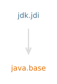

模块 jdk.jdi
The Java Debug Interface (JDI) is a high level Java API providing information useful for debuggers and similar systems needing access to the running state of a (usually remote) virtual machine.
JDI provides introspective access to a running virtual machine's state, Class, Array, Interface, and primitive types, and instances of those types.
JDI also provides explicit control over a virtual machine's execution. The ability to suspend and resume threads, and to set breakpoints, watchpoints, etc. Notification of exceptions, class loading, thread creation, etc. The ability to inspect a suspended thread's state, local variables, stack backtrace, etc.
JDI is the highest-layer of the Java Platform Debugger Architecture (JPDA).
This module includes a simple command-line debugger, jdb.
Global Exceptions
This section documents exceptions which apply to the entire API and are thus not documented on individual methods.
NOTE: The exceptions below may be thrown whenever the specified conditions are met but a guarantee that they are thrown only exists when a valid result cannot be returned.Any method on a
Mirrorthat takes aMirroras an parameter directly or indirectly (e.g., as a element in aList) will throwVMMismatchExceptionif the mirrors are from different virtual machines.Any method which takes a
Objectas an parameter will throwNullPointerExceptionif null is passed directly or indirectly -- unless null is explicitly mentioned as a valid parameter.
Any method on
ObjectReference,ReferenceType,EventRequest,StackFrame, orVirtualMachineor which takes one of these directly or indirectly as an parameter may throwVMDisconnectedExceptionif the target VM is disconnected and theVMDisconnectEventhas been or is available to be read from theEventQueue.Any method on
ObjectReference,ReferenceType,EventRequest,StackFrame, orVirtualMachineor which takes one of these directly or indirectly as an parameter may throwVMOutOfMemoryExceptionif the target VM has run out of memory.Any method on
ObjectReferenceor which directly or indirectly takesObjectReferenceas parameter may throwObjectCollectedExceptionif the mirrored object has been garbage collected.Any method on
ReferenceTypeor which directly or indirectly takesReferenceTypeas parameter may throwObjectCollectedExceptionif the mirrored type has been unloaded.
- 模块图:

- 工具指南:
- jdb
- 自:
- 9
- 另见:
{kind=link}
-
包
导出包描述This is the core package of the Java Debug Interface (JDI), it defines mirrors for values, types, and the target VirtualMachine itself - as well bootstrapping facilities.This package defines connections between the virtual machine using the JDI and the target virtual machine.This package comprises the interfaces and classes used to develop newTransportServiceimplementations.This package defines JDI events and event processing.This package is used to request that a JDI event be sent under specified conditions. -
服务
提供使用类型描述A method of connection between a debugger and a target VM.A transport service for connections between a debugger and a target VM.
Java API 非官方中文翻译项目 · GitHub · 报告此页面的问题或提出改进建议 · 查看完整中文版权声明
中文翻译文本版权 © 2026 本翻译项目贡献者，以 知识共享 署名-相同方式共享 4.0 国际 (CC BY-SA 4.0) 许可证发布。原始英文内容版权归 Oracle 所有，使用受原始许可条款约束。